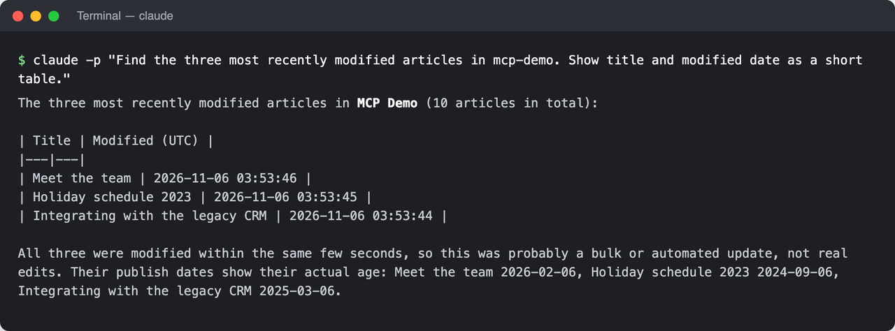
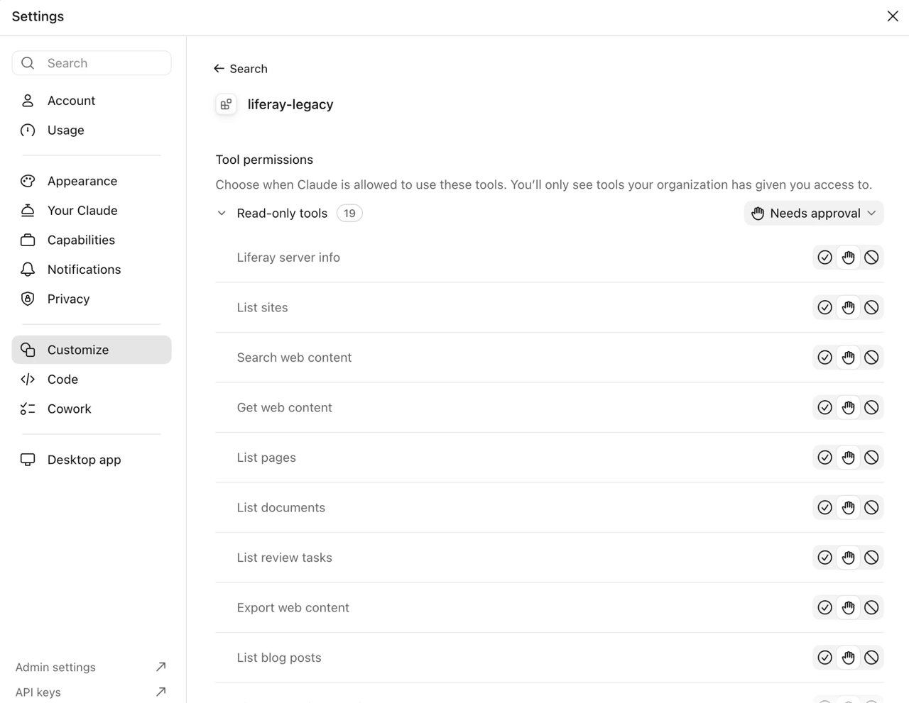
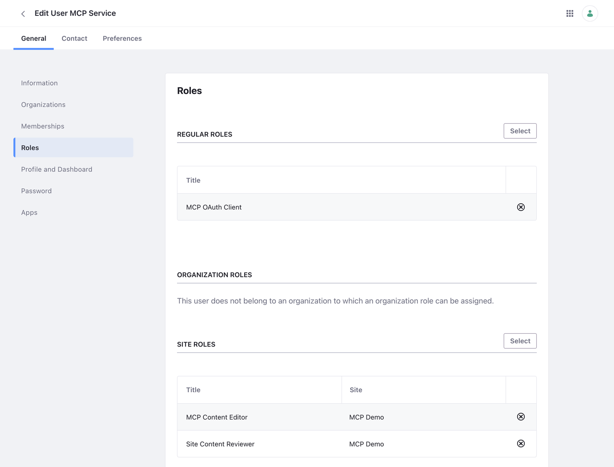

Server MCP untuk Liferay DXP 2024.Q1 hingga 2025.Q4 dan rilis pembaruan 7.4. Asisten AI seperti Claude Code dapat menemukan, membaca, dan mengubah konten Liferay Anda dengan bahasa sehari-hari, mengikuti izin Liferay, dengan pratinjau yang Anda konfirmasi sebelum ada perubahan. Untuk penggunaan eksperimental di salinan uji atau pengembangan.
Fitur
- Untuk rilis tanpa MCP. Menghadirkan akses AI ke 2024.Q1 hingga 2025.Q4 dan rilis pembaruan 7.4, tanpa mengubah Liferay. 2026.Q1 dan yang lebih baru sudah memilikinya bawaan.
- Alat konten. Cari, baca, buat, dan perbarui konten web, dokumen, blog, kategori, tag, menu navigasi, artikel basis pengetahuan, dan terjemahan, serta jalankan alur kerja peninjauan.
- Semua API, saat dibutuhkan. Alat generik menjangkau semua Headless REST API dan layanan web JSON Liferay, melampaui alat khusus.
- Penulisan yang aman. Penulisan nonaktif secara default. Jika diaktifkan, setiap perubahan ditampilkan sebagai pratinjau dan hanya dijalankan setelah dikonfirmasi, dan setiap percobaan dicatat di log audit.
- Hak akses minimum. Server bertindak sebagai satu pengguna layanan, melalui aplikasi OAuth 2 yang cakupannya membatasi apa yang dapat dijangkau.
- Inspeksi halaman. Lihat judul, tautan, deskripsi gambar yang hilang, dan error di sebuah halaman, serta ambil tangkapan layar, sebagai tamu atau pengguna hanya-lihat.
Screenshot



